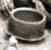
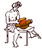
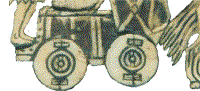

| Articles | |
| The
Origins of the Potter's Wheel Originally published on Victor Bryant's Ceramicstudies.com. Used by permission. © Victor Bryant. The Sumerian Culture - The First Urban CivilizationThe story probably begins in the Middle East around 4000 BC (6000 BP). The village settlements were growing in size and prosperity. A new phase in man's development was happening. In what is today southern Iraq, or Ancient Mesopotamia, the first urban civilization was being created; villages grew into towns and then towns into the great city states: Ur, Uruk, Ubaid, Eridu, Lagesh etc. By 3000 BC. the people of these cities, the Sumerians, had already established a sophisticated trading commercial culture. This was the first town and city based civilization on this planet. New crafts and occupations evolved. More skills and tools were invented. The Effects of SpecialisingTo a great extent all was triggered as a result of increased division of labour and job specialisation within earlier small communities. Of course some men still hunted and fished, but others now planted crops and reared animals and, as they became more experienced, farming methods improved, food production increased and so did the population. Trade expanded over the whole region. More pots were needed and various ways were tried to speed up all the pottery techniques: making, decorating and firing. Who did what - Men or Women?Most of these changes affected the work and life style of the men much more than their womenfolk. Most women were already almost fully occupied and "specialising" in the vital task of bearing and rearing children. Any other tasks done by the women must therefore have been part-time and close to the home. Women almost certainly developed the techniques of sewing, weaving and basket making in most prehistoric communities. They were probably also the first real potters - the makers of bowls, dishes, jugs etc. so it is not surprising that in these early village societies building a basket and coiling a pot had a lot in common. Coiling Pots The ancient technique of building a coiled pot involves squeezing, squashing and smoothing the successive layers of coils into a thin even wall which swells or tapers as it grows and encloses a shape. To do this you need to turn the pot around slowly as you work.Early potters soon learned to make the task of periodically turning the pot much easier and more efficient by beginning their coiling on a dish or bowl, or even a flat plate or smooth platter they could twist round as they worked.
Most
early coiled pots are round bottomed. They were probably started in
a bowl which could be easily turned or rolled around whilst adding
and smoothing the clay coils.
The base was probably started by pressing a lump of soft clay or a spiral of coils into a shallow round bottomed bowl and smoothing it out with the fingers or a piece of wood or a bone rib. Coils were then added progressively. The shallow bowl gave support to the soft clay as first coils were added. The rounded bottom made it easy to pull the pot around bit by bit. As the base and lower coils gradually dried and hardened progressively they gave firmer support to the soft coils being added above. In more remote regions of the world women are probably still
coiling pots in this way. These illustrations show these methods
still being used within the last century in some African villages.
Squatting
down with the bowl between the legs. It is easy to turn such a bowl
as each coil is added and squeezed and smoothed into the wall.
Making
a round base. A pancake of clay about to be pressed into a fired
clay bowl. Sausage-like coils in the foreground.
Adding
and squeezing a coil as the wall is built.
Adding
small coils at the neck of the pot. Ready to build out the rim.
Thinning
and opening to make a rim.
Drying
the pots.
An
open bonfire of the finished pots. Platters and bowls for faster coiling.

Innumerable ways developed of using a platter or bowl to speed up
coiling. Here is an example found in the Indian subcontinent.
However, soon after 4000 BC. in Mesopotamia a new
discovery/invention was being exploited... The Arrival of the Wheel

The principle of the Wheel was discovered earliest in southern
Iraq(Mesopotamia).
By discovering the principle of the wheel, the Sumerians were
able to give up pulling provisions or people along on sledges or
dragging heavy objects over a series of logs. They devised how to
construct the first carts and chariots. This strange wedge shaped object c. 3000 BC. was found in an ancient Sumerian royal grave at Ur in Iraq. (It may have been a sounding box for a harp). It includes perhaps the earliest drawings of wheeled carts or chariots. The whole surface is covered with a decoration made up of tiny carved pieces of lapis, ivory and limestone stuck together on the wooden box with bitumen; a sort of mosaic with engraved drawing. There are two main rectangular panels illustrating a great battle and then the plunder and celebration. This is a detail from the Battle scene: Warriors in a horse drawn cart or chariot. This new weapon of war has four wooden wheels made out of two semicircular pieces bolted together. It must have been a deadly weapon at the time. Soon potters and other craftsmen found more peaceful uses for the wheel...
|

{kind=link}
{kind=link}
{kind=link}
{kind=link}
{kind=link}
{kind=link}
{kind=link}
{kind=link}
{kind=link}
{kind=link}
{kind=link}
{kind=link}
{kind=link}
{kind=link}